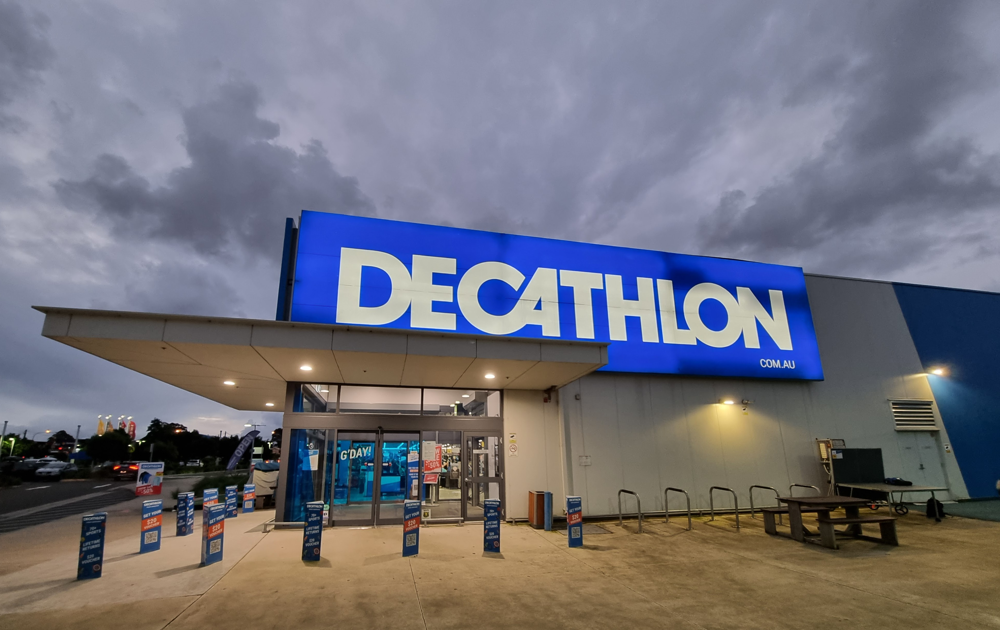

Liste des commerces de la ville de ScrumLand :
Association Culturelle ScrumArts
Promouvoir les arts visuels, la musique et la littérature à travers des événements et des ateliers.

Association des Étudiants de ScrumLand (AESL)
Soutenir les étudiants locaux en organisant des événements, des conférences et des activités.

Association pour l'Environnement et le Développement Durable (AEDD)
Sensibiliser et agir pour la préservation de l'environnement local.

Association Sportive ScrumFit
Encourager la pratique du sport en organisant des compétitions et des programmes d'entraînement pour tous les niveaux.
Association des Bénévoles de ScrumLand (ABS)
Coordonner les initiatives bénévoles et les actions caritatives dans la ville.

Association des Parents de ScrumLand (APS)
Soutenir les parents et organiser des activités familiales pour renforcer les liens communautaires.

Association pour l'Innovation Technologique (AIT)
Promouvoir l'éducation technologique à travers des ateliers et des événements liés à la technologie et à l'innovation.
Association des Aînés Heureux
Offrir un soutien et des activités sociales pour les personnes âgées de la ville.

Association des Artistes en Herbe
Encourager la créativité et les talents artistiques chez les jeunes en organisant des cours et des expositions.

Association pour l'Égalité et la Diversité (AED)
Travailler pour promouvoir l'égalité des chances et la diversité au sein de la communauté de ScrumLand.